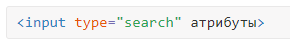
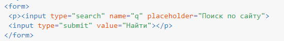

Поле для поиска
На сайтах часто востребован поиск по ключевым словам, для ввода которых используется текстовое поле. В HTML5 для поиска применяется специальное поле, синтаксис его следующий:

Используемые атрибуты совпадают с текстовым полем.
Разница между текстовым полем и полем для поиска состоит в стилистическом оформлении. На платформах, где поисковая форма имеет свой собственный уникальный вид, легко придать полю аналогичное оформлении. В большинстве браузеров поле для поиска отличается от текстового поля наличием небольшого крестика в правой части для быстрой очистки введённого текста (рис. 1).
В примере 1 показано создание формы с полем для поиска.
Пример 1. Поле для поиска
